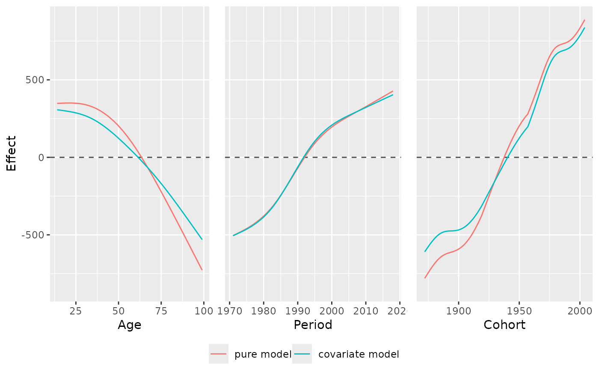
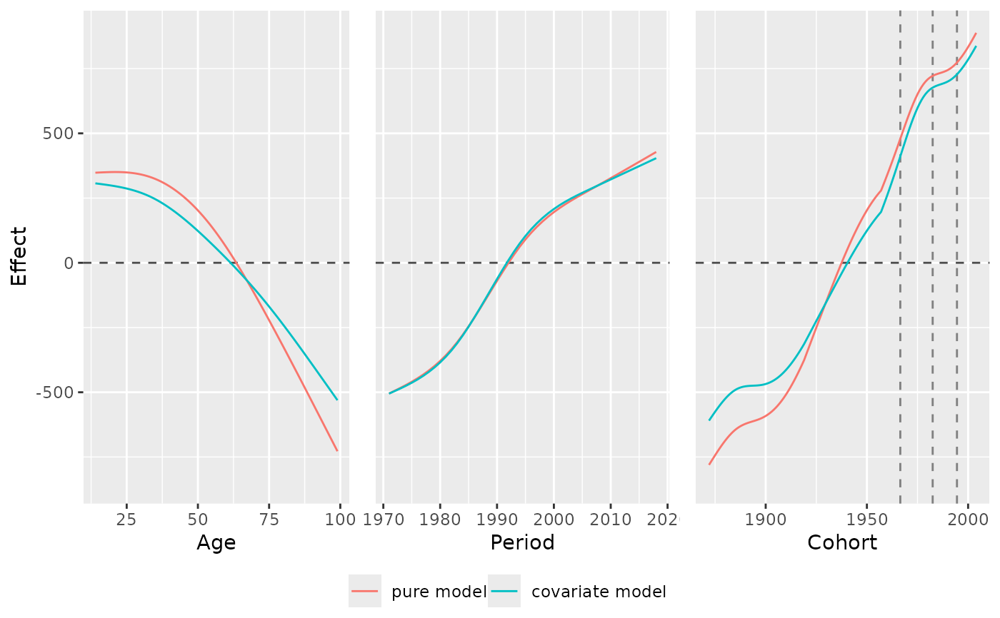

Joint plot to compare the marginal APC effects of multiple models
Source:R/plot_jointMarginalAPCeffects.R
plot_jointMarginalAPCeffects.RdThis function creates a joint plot of the marginal APC effects of multiple estimated models. It creates a plot with one pane per age, period and cohort effect, each containing one lines for each estimated model.
Usage
plot_jointMarginalAPCeffects(
model_list,
dat,
vlines_list = NULL,
ylab = NULL,
ylim = NULL,
plot_CI = FALSE
)Arguments
- model_list
A list of regression models estimated with
gamorbam. If the list is named, the names are used as labels. Can also be a single model object instead of a list.- dat
Dataset with columns
periodandage. Ify_varis specified, the dataset must contain the respective column. Ifmodelis specified, the dataset must have been used for model estimation withgamorbam.- vlines_list
Optional list that can be used to highlight the borders of specific age groups, time intervals or cohorts. Each element must be a numeric vector of values on the x-axis where vertical lines should be drawn. The list can maximally have three elements and must have names out of
c("age","period","cohort".- ylab, ylim
Optional ggplot2 styling arguments.
- plot_CI
Indicator if 95% confidence intervals should be plotted. Defaults to FALSE.
Value
Plot grid created with ggarrange.
Details
If the model was estimated with a log or logit link, the function automatically performs an exponential transformation of the effect.
Since the plot output created by the function is no ggplot2 object,
but an object created with ggpubr::ggarrange, the overall theme
of the plot cannot be changed by adding the theme in the form of
'plot_jointMarginalAPCeffects(...) + theme_minimal(...)'.
Instead, you can call theme_set(theme_minimal(...)) as an individual
call before calling plot_jointMarginalAPCeffects(...). The latter
function will then use this global plotting theme.
Author
Alexander Bauer alexander.bauer@stat.uni-muenchen.de, Maximilian Weigert maximilian.weigert@stat.uni-muenchen.de
Examples
library(APCtools)
library(mgcv)
data(travel)
# plot marginal effects of one model
model_pure <- gam(mainTrip_distance ~ te(age, period), data = travel)
plot_jointMarginalAPCeffects(model_pure, dat = travel)
# plot marginal effects of multiple models
model_cov <- gam(mainTrip_distance ~ te(age, period) + s(household_income),
data = travel)
model_list <- list("pure model" = model_pure,
"covariate model" = model_cov)
plot_jointMarginalAPCeffects(model_list, dat = travel)

# mark specific cohorts
plot_jointMarginalAPCeffects(model_list, dat = travel,
vlines_list = list("cohort" = c(1966.5,1982.5,1994.5)))
